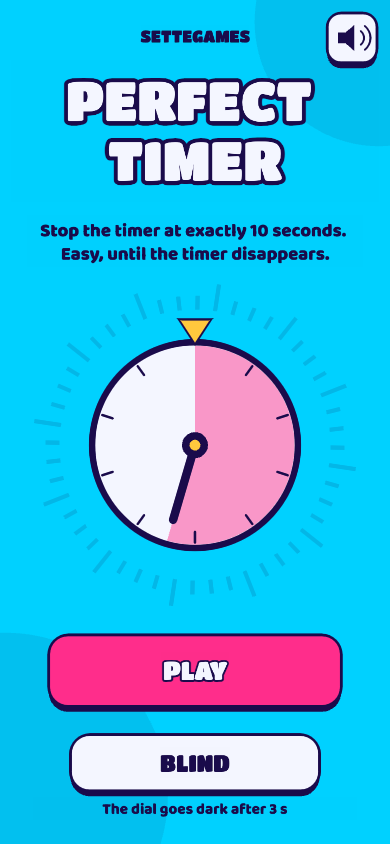

Perfect Timer

Stop the timer at exactly 10 seconds. Easy, until the timer disappears.
Free, no sign-up, right in your browser. Also on Telegram: @SetteGamesBot.
Weekly leaderboard
| Play to get on the leaderboard. |
More games
Three Seconds FlatStop the timer at exactly 3 seconds. Five quick rounds, and in Blind mode the dial goes dark after 1 second.Seven SecondsStop the timer at exactly 7 seconds. Three rounds, and the dial goes dark halfway.
From the same team
SettebelloClassic Italian card games online, from the same team
Last Sheep RoyaleThe last sheep standing wins
FAQ
How do I play?
Tap to start the timer and tap again when the hand is back on top. The closer you get to the exact time, the more points you score. In Blind mode the dial goes dark after a few seconds: you have to count in your head.
Do I need an account?
No. On the leaderboard you appear with an anonymous name (an animal and a number). We do not collect personal data.
Is it free?
Yes, it is free to play.